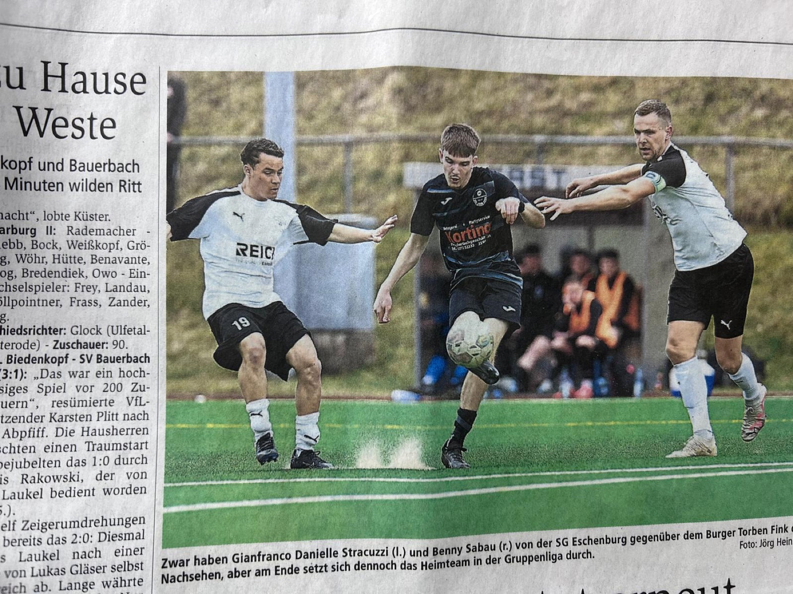
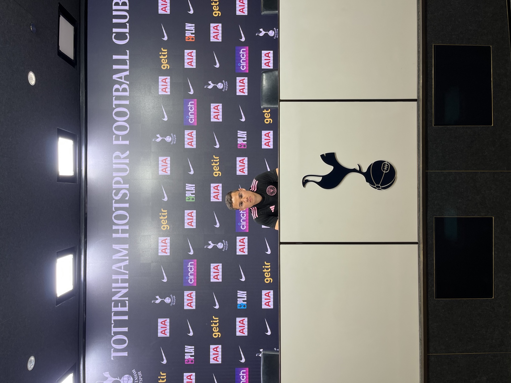
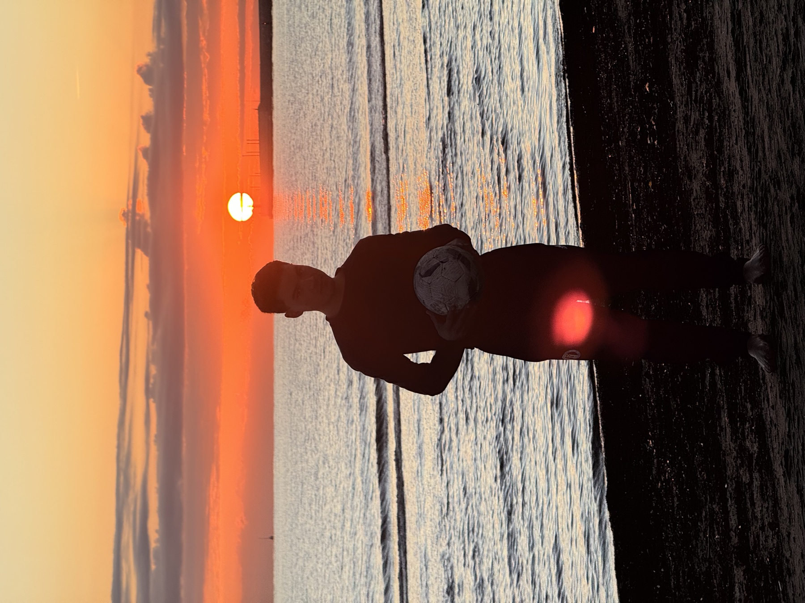

Recuperar energía para completar el día con mayor estabilidad.
Real food. Real habits. Real results.
Build better health through real food and real habits.
Prime Health helps you improve energy, sleep, and day-to-day health with practical habit coaching from Gianfranco Stracuzzi.
More energy
Better sleep
Better health
Resultados que se sienten en tu vida diaria.
Objetivos concretos sobre los que trabajarás con estructura, seguimiento y hábitos sostenibles.
Dormir mejor y levantarte con más claridad.
Comer con estructura y reducir la ansiedad alrededor de la comida.
Perder grasa mientras conservas fuerza y rendimiento.
Mantener hábitos incluso durante semanas ocupadas.


Conoce a Gianfranco
Gianfranco Stracuzzi
Gianfranco is the health and habits coach behind Prime Health. His public profiles connect personal discipline, soccer, and health coaching into one clear idea: better health comes from real habits you can practice daily.
Prime Health does not position the work as a quick fix. It focuses on food, sleep, energy, and consistency so clients can improve the way they live, not just chase a short-term result.
Su camino lo llevó de Venezuela a Estados Unidos y después a Europa, donde el fútbol profesional puso a prueba su disciplina lejos de su familia.
Después de una crisis de salud que cambió su perspectiva, estudió profundamente nutrición, sueño, recuperación, mentalidad y fe. De esa reconstrucción nació el método PRIME.

Choose your Prime Health plan.
Each plan is designed around practical habit change, real food, better energy, and a healthier lifestyle that can last.
Prime Health coaching is educational and habit-based. It is not medical advice, diagnosis, or treatment.
Recursos gratuitos
¿Quieres las guías de Prime Health?
Déjanos tu correo y abre WhatsApp para solicitar las guías directamente a Gianfranco.
A practical path from stuck to consistent.
No medical claims. No overpromising. Just a clear coaching process built around daily behavior.
Assess your current habits.
Start with what your days actually look like: food, sleep, movement, energy, and the routines that keep repeating.
Simplify the food plan.
Focus on real-food choices that reduce friction and make progress easier to repeat.
Improve the routines around sleep and energy.
Build small daily rhythms that support better recovery, steadier energy, and healthier decisions.
Track what is working.
Keep the process honest by looking at consistency, behavior, and how the client feels over time.
Ready to build better habits?
Book a consultation with Prime Health or start by following the Real Food Challenge on Instagram. A dedicated booking link can be added here when the client provides it.